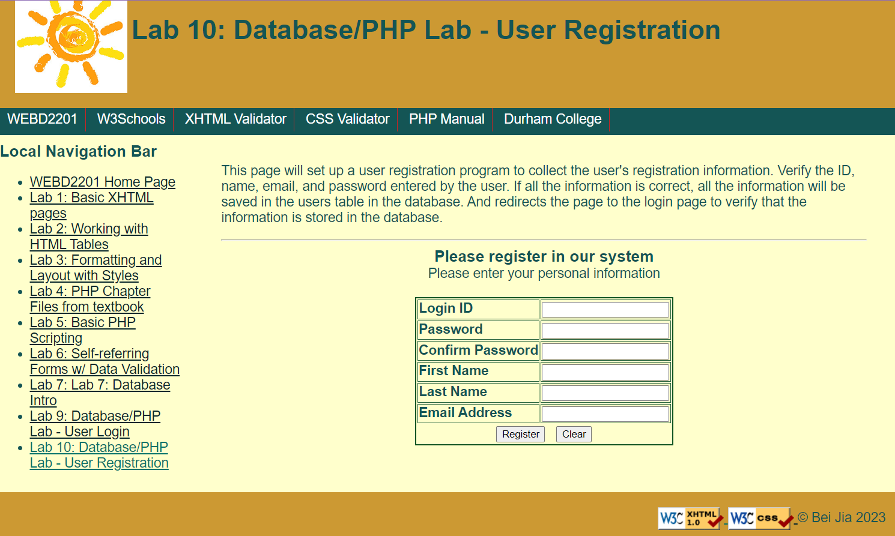

Currently I can provide web development through HTML, CSS,.NET, PHP, JavaScript.
For example, personal website development, user registration, client management
and other aspects of web development.
For example, personal website development, user registration, client management
and other aspects of web development.

Customized back-end development services through C++, C#, Java, etc

Provide web testing services.
1. According to product development plans and testing requirements, prepare test schemes, develop test plans and test cases, organize and implement tests, control test progress, and adjust test plans;
2. Follow up and report the progress of the test work, write the test summary report, analyze the missing problems in the test;